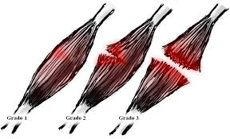

Desgarro Muscular
El desgarro muscular es una lesión común en la que las fibras musculares se rompen parcial o completamente debido a una tensión excesiva. Puede afectar a cualquier músculo del cuerpo, pero es más frecuente en piernas, espalda y hombros. Los desgarros pueden ser leves, moderados o graves según el número de fibras afectadas.
Signos y síntomas
- Dolor agudo y repentino en el músculo
- Inflamación o hinchazón
- Dificultad para mover la zona afectada
- Moretones o decoloración
- Sensación de chasquido en el momento de la lesión

Diagnóstico
El diagnóstico se realiza mediante una exploración física, evaluación del rango de movimiento y, en algunos casos, estudios de imagen como ultrasonido o resonancia magnética.
- Evaluación clínica y palpación
- Pruebas de movilidad y fuerza
- Ecografía o resonancia en casos graves
Tratamiento
- Reposo y elevación de la zona afectada
- Aplicación de hielo en las primeras 48 horas
- Analgésicos o antiinflamatorios
- Fisioterapia y ejercicios de rehabilitación
- Cirugía en desgarros completos severos
Especialistas involucrados
- Ortopedista: para diagnóstico y tratamiento quirúrgico si es necesario
- Médico general o del deporte: para manejo conservador
- Fisioterapeuta: para recuperación funcional y fortalecimiento
← Volver al inicio